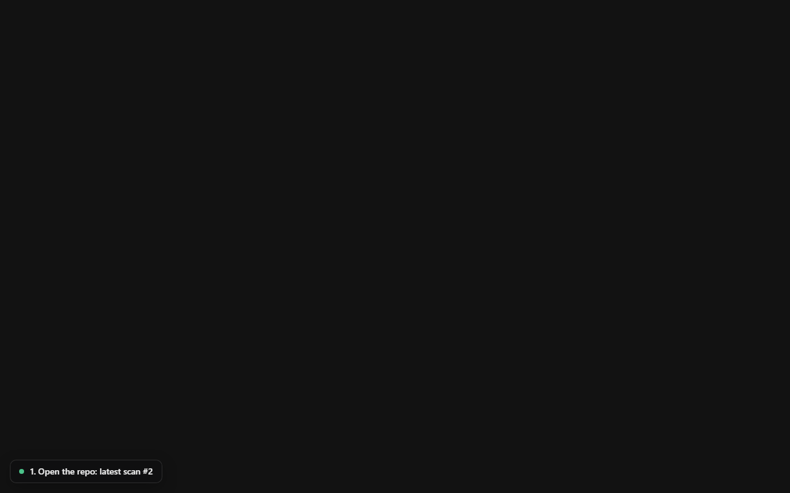
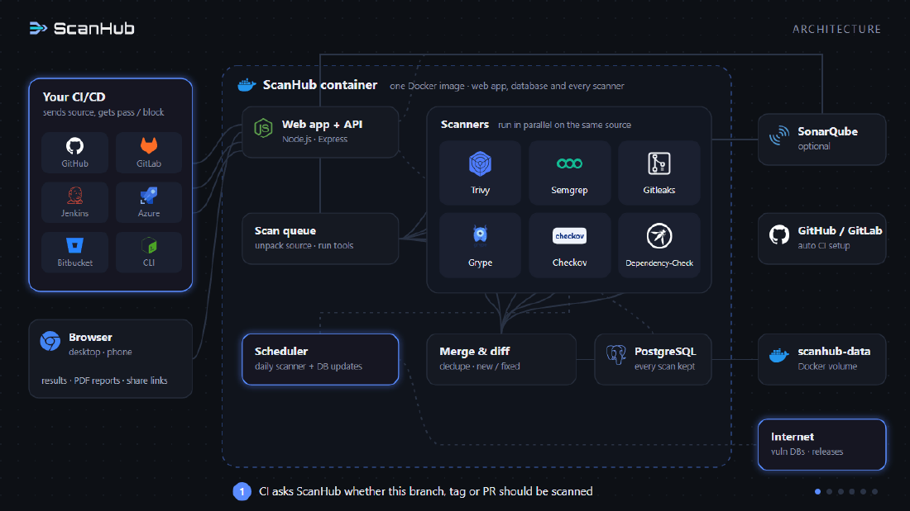
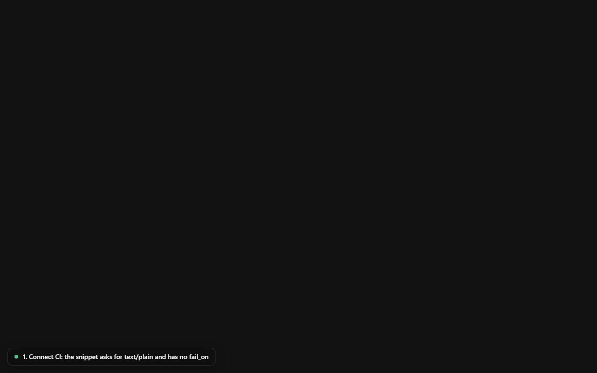
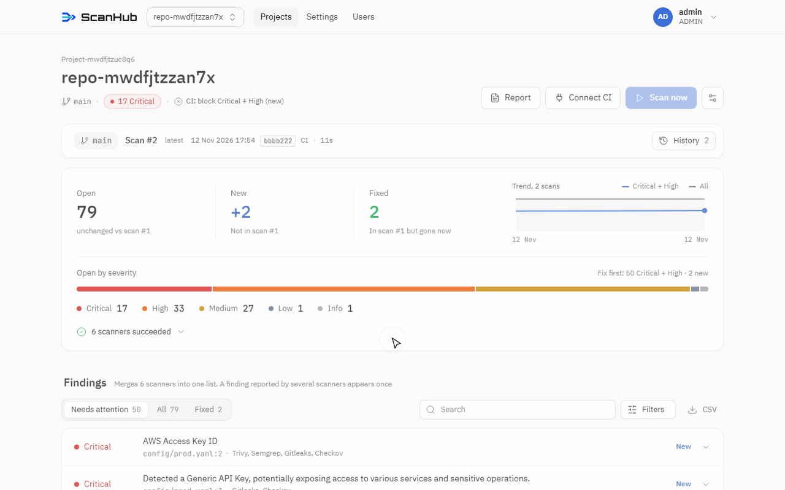
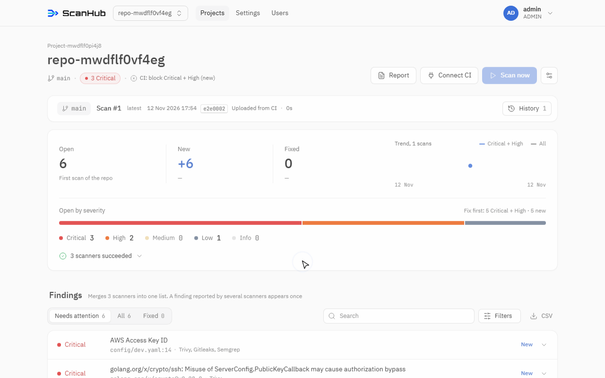
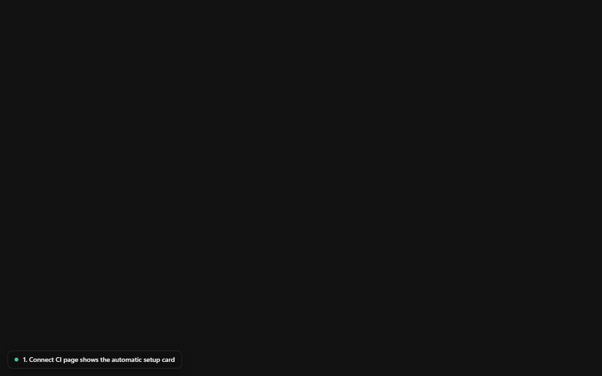
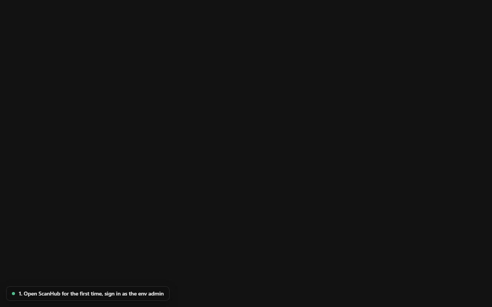

Scattered output
Each tool has its own CLI, its own report format and its own idea of severity. Results end up buried in CI logs nobody reads.
Free · Self-hosted · One Docker container
ScanHub runs Trivy, Grype, Gitleaks, Checkov, OWASP Dependency-Check, Semgrep and SonarQube on the code your CI uploads. It merges duplicate findings, shows what is new or fixed since the last scan, and can fail the pipeline when it matters.
docker compose up -d · amd64 & arm64 · your code never leaves your server

Why ScanHub
Each tool has its own CLI, its own report format and its own idea of severity. Results end up buried in CI logs nobody reads.
The same CVE shows up from Trivy, Grype and Dependency-Check. Without merging, your team triages it three times.
A one-off scan can't tell you what this commit introduced or what last sprint fixed. That is the question reviewers actually ask.
ScanHub puts every scanner behind one upload endpoint, keeps the history, and gives you one de-duplicated list per repo. Hosted platforms with the same workflow are usually paid per seat or per repo; ScanHub is free and runs on your own machine.
How it works
Download docker-compose.yml, set an admin password and URL, run docker compose up -d. The image ships with PostgreSQL and every scanner.
Add a repo and copy the generated snippet for GitHub Actions, GitLab CI, Jenkins, Bitbucket, Azure Pipelines or plain shell. Or connect GitHub/GitLab and let ScanHub open the setup for you.
CI uploads the source. ScanHub runs the enabled scanners, normalizes severities and merges duplicate findings.
See new vs. fixed against the previous scan, fail the build on your threshold, export PDF/HTML reports or share a protected link.

Features
One list per repo. A finding reported by several tools appears once, with every source listed.
Each scan is compared with the previous one, so you see exactly what a commit added or resolved.
Block the pipeline above a severity threshold, or report only. Switch modes without touching the pipeline.
Client-ready PDF and HTML reports for a repo or a scan.
Share results with signed-in users only, or with a password-protected link.
Give each group access to specific projects, or to all of them.
Connect GitHub or GitLab and ScanHub sets up the pipeline for a repo.
Already running scanners in CI? Send their JSON or SARIF to /api/v1/reports.
Every scan is kept. Search, filter and group findings across scans.
Supported scanners
Dependency CVEs, misconfig
Dependency CVEs
Leaked secrets & keys
Infrastructure as code
Known-vulnerable libraries
Static analysis (SAST)
Code quality & security hotspots
Each scanner keeps its own license; see THIRD_PARTY_NOTICES.md or Settings → About and licenses in the app. Semgrep Registry rules are under the Semgrep Rules License and are used only after an admin accepts it (or you supply your own rules). Product names and logos belong to their owners; ScanHub is not affiliated with or endorsed by them.
Use cases
Get SCA, SAST, IaC and secret scanning on every push without buying a platform or hiring a specialist.
Organize by project › repo, give each client group its own access, and hand over a PDF report at delivery.
Fail the build when a change introduces a critical or high finding; let existing debt be tracked, not block work.
Scan history and exportable reports show what was checked, when, and what was fixed.
Gitleaks runs on every upload, so a committed API key shows up as a new finding right away.
Keep your CI jobs and send their JSON/SARIF to ScanHub for history, merging and the gate.
Quick install
You only need Docker: Docker Desktop on Windows 10/11 or macOS, or Docker Engine + Compose on Linux (x86_64 or arm64).
mkdir scanhub && cd scanhub
curl -fsSLO https://raw.githubusercontent.com/SatangBudsai/scanhub/main/docker-compose.ymlmkdir scanhub; cd scanhub
Invoke-WebRequest https://raw.githubusercontent.com/SatangBudsai/scanhub/main/docker-compose.yml -OutFile docker-compose.ymldocker-compose.ymlSCANHUB_ADMIN_USER: admin
SCANHUB_ADMIN_PASSWORD: your-strong-password # at least 8 characters
SCANHUB_URL: https://scanhub.company.local # URL people and CI usedocker compose up -dOpen your SCANHUB_URL, sign in as admin, and pick scanners in the setup wizard. Update later with docker compose pull && docker compose up -d; data is kept.
Image: ghcr.io/satangbudsai/scanhub · Full install guide
Product tour





FAQ
Yes. There is no paid tier and no seat limit. You pay only for the machine you run it on.
To your own server. ScanHub is self-hosted: uploaded code, findings and the PostgreSQL database stay in a Docker volume you control. The container only reaches out to download scanner updates and vulnerability databases.
No license has been chosen for ScanHub itself yet; check the repository for updates. Every bundled scanner keeps its own license, listed in THIRD_PARTY_NOTICES.md and under Settings → About and licenses.
The Semgrep Registry rules (such as p/default) are under the Semgrep Rules License, which only you can accept. An admin accepts it in Settings → Scanners → Semgrep rules, or you point Semgrep at your own rules with SEMGREP_RULES.
GitHub Actions, GitLab CI, Jenkins, Bitbucket Pipelines, Azure Pipelines, or anything that can run curl. ScanHub generates the snippet for each.
Yes. Send their JSON or SARIF output to /api/v1/reports and ScanHub handles merging, history and the gate.
Any machine that runs Docker on amd64 or arm64. About 8 GB of RAM is recommended when SonarQube is enabled.
Yes, with an image transfer via docker save / docker load. Vulnerability databases will be as fresh as the image unless you update them.